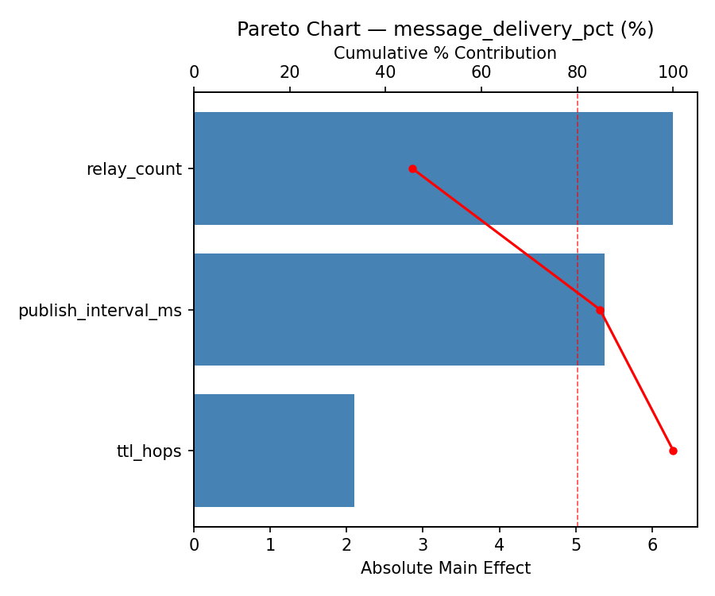
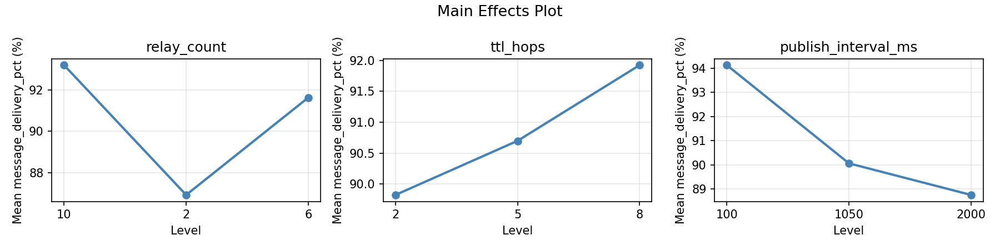
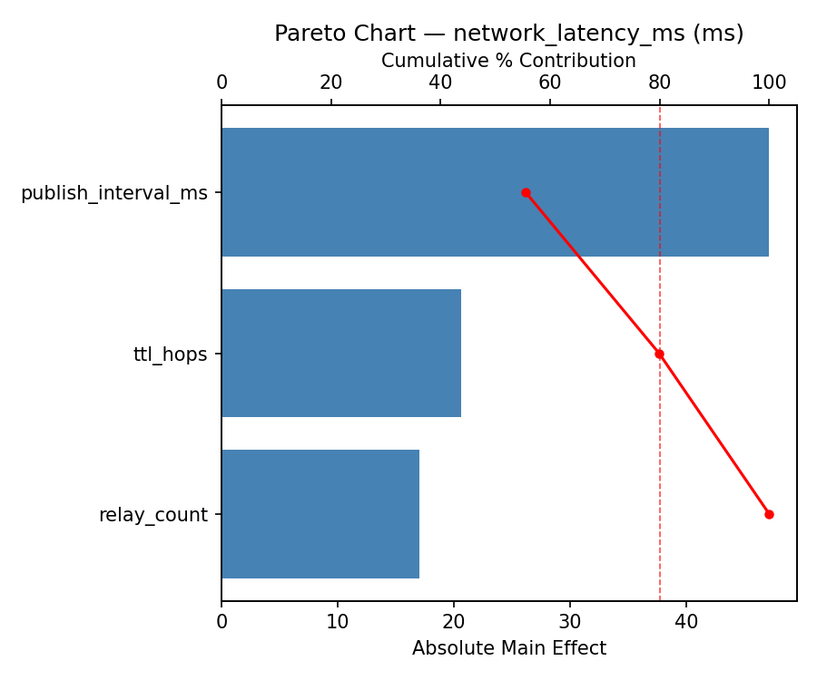
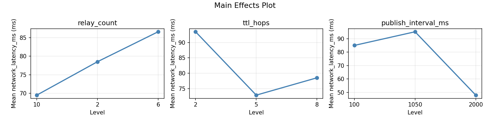
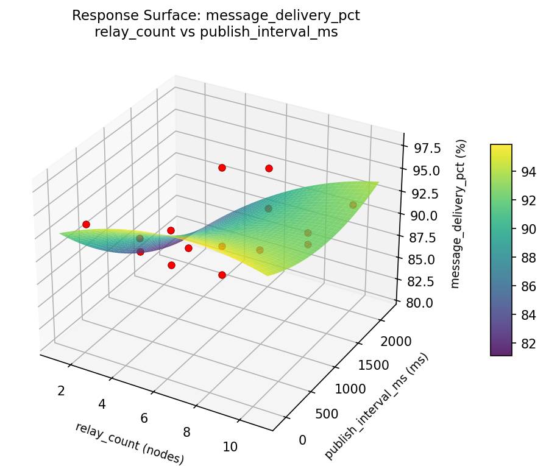
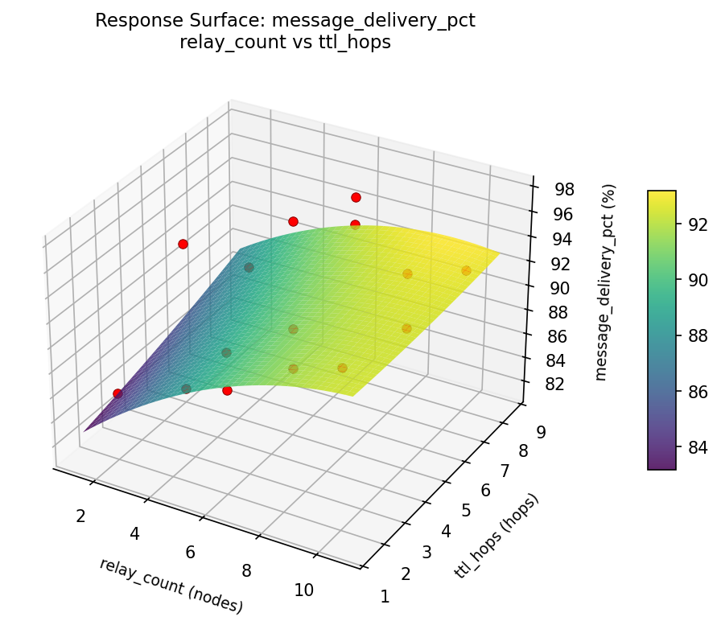
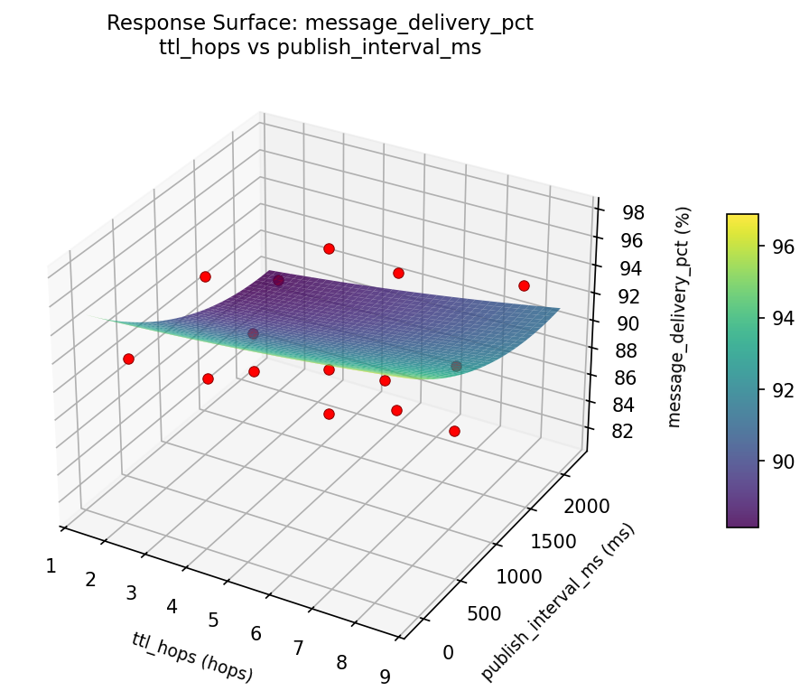
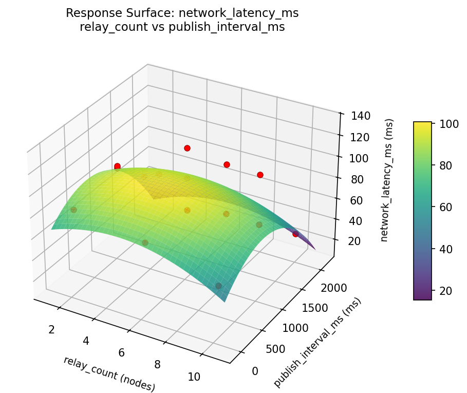
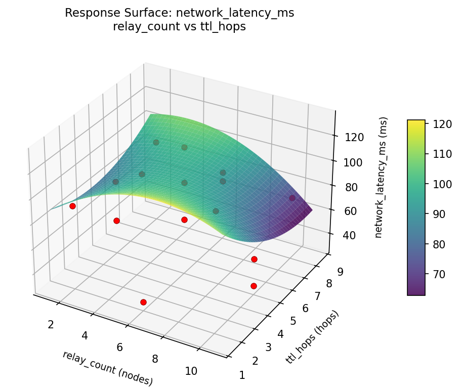
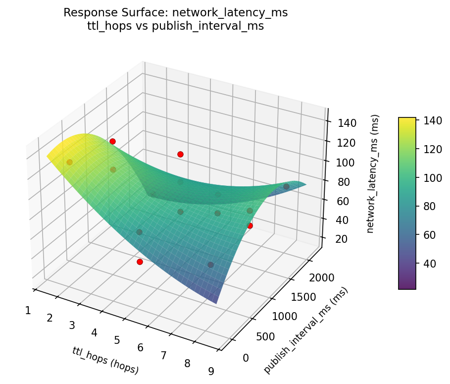

Summary
This experiment investigates ble mesh topology. Box-Behnken design to tune relay count, TTL hops, and publish interval for message delivery and latency.
The design varies 3 factors: relay count (nodes), ranging from 2 to 10, ttl hops (hops), ranging from 2 to 8, and publish interval ms (ms), ranging from 100 to 2000. The goal is to optimize 2 responses: message delivery pct (%) (maximize) and network latency ms (ms) (minimize). Fixed conditions held constant across all runs include ble version = 5.0, mesh profile = sig_mesh.
A Box-Behnken design was chosen because it efficiently fits quadratic models with 3 continuous factors while avoiding extreme corner combinations — requiring only 15 runs instead of the 8 needed for a full factorial at two levels.
Quadratic response surface models were fitted to capture potential curvature and factor interactions. The RSM contour plots below visualize how pairs of factors jointly affect each response.
Key Findings
For message delivery pct, the most influential factors were publish interval ms (40.4%), relay count (30.3%), ttl hops (29.3%). The best observed value was 97.6 (at relay count = 6, ttl hops = 5, publish interval ms = 1050).
For network latency ms, the most influential factors were relay count (49.5%), publish interval ms (39.8%), ttl hops (10.7%). The best observed value was 31.0 (at relay count = 2, ttl hops = 5, publish interval ms = 2000).
Recommended Next Steps
- Run confirmation experiments at the predicted optimal settings to validate the model.
- Consider whether any fixed factors should be varied in a future study.
Experimental Setup
Factors
| Factor | Low | High | Unit |
|---|
relay_count | 2 | 10 | nodes |
ttl_hops | 2 | 8 | hops |
publish_interval_ms | 100 | 2000 | ms |
Fixed: ble_version = 5.0, mesh_profile = sig_mesh
Responses
| Response | Direction | Unit |
|---|
message_delivery_pct | ↑ maximize | % |
network_latency_ms | ↓ minimize | ms |
Configuration
{
"metadata": {
"name": "BLE Mesh Topology",
"description": "Box-Behnken design to tune relay count, TTL hops, and publish interval for message delivery and latency"
},
"factors": [
{
"name": "relay_count",
"levels": [
"2",
"10"
],
"type": "continuous",
"unit": "nodes"
},
{
"name": "ttl_hops",
"levels": [
"2",
"8"
],
"type": "continuous",
"unit": "hops"
},
{
"name": "publish_interval_ms",
"levels": [
"100",
"2000"
],
"type": "continuous",
"unit": "ms"
}
],
"fixed_factors": {
"ble_version": "5.0",
"mesh_profile": "sig_mesh"
},
"responses": [
{
"name": "message_delivery_pct",
"optimize": "maximize",
"unit": "%"
},
{
"name": "network_latency_ms",
"optimize": "minimize",
"unit": "ms"
}
],
"settings": {
"operation": "box_behnken",
"test_script": "use_cases/68_ble_mesh_topology/sim.sh"
}
}
Experimental Matrix
The Box-Behnken Design produces 15 runs. Each row is one experiment with specific factor settings.
| Run | relay_count | ttl_hops | publish_interval_ms |
|---|
| 1 | 6 | 2 | 100 |
| 2 | 6 | 5 | 1050 |
| 3 | 10 | 5 | 2000 |
| 4 | 10 | 5 | 100 |
| 5 | 6 | 5 | 1050 |
| 6 | 6 | 5 | 1050 |
| 7 | 2 | 5 | 2000 |
| 8 | 10 | 2 | 1050 |
| 9 | 6 | 2 | 2000 |
| 10 | 10 | 8 | 1050 |
| 11 | 2 | 5 | 100 |
| 12 | 6 | 8 | 2000 |
| 13 | 2 | 2 | 1050 |
| 14 | 2 | 8 | 1050 |
| 15 | 6 | 8 | 100 |
Step-by-Step Workflow
1
Preview the design
$ python doe.py info --config use_cases/68_ble_mesh_topology/config.json
2
Generate the runner script
$ python doe.py generate --config use_cases/68_ble_mesh_topology/config.json \
--output use_cases/68_ble_mesh_topology/results/run.sh --seed 42
3
Execute the experiments
$ bash use_cases/68_ble_mesh_topology/results/run.sh
4
Analyze results
$ python doe.py analyze --config use_cases/68_ble_mesh_topology/config.json
5
Get optimization recommendations
$ python doe.py optimize --config use_cases/68_ble_mesh_topology/config.json
6
Generate the HTML report
$ python doe.py report --config use_cases/68_ble_mesh_topology/config.json \
--output use_cases/68_ble_mesh_topology/results/report.html
Features Exercised
| Feature | Value |
|---|
| Design type | box_behnken |
| Factor types | continuous (all 3) |
| Arg style | double-dash |
| Responses | 2 (message_delivery_pct ↑, network_latency_ms ↓) |
| Total runs | 15 |
Analysis Results
Generated from actual experiment runs using the DOE Helper Tool.
Response: message_delivery_pct
Top factors: publish_interval_ms (40.4%), relay_count (30.3%), ttl_hops (29.3%).
Pareto Chart

Main Effects Plot

Response: network_latency_ms
Top factors: relay_count (49.5%), publish_interval_ms (39.8%), ttl_hops (10.7%).
Pareto Chart

Main Effects Plot

Response Surface Plots
3D surfaces fitted with quadratic RSM. Red dots are observed data points.
message delivery pct relay count vs publish interval ms

message delivery pct relay count vs ttl hops

message delivery pct ttl hops vs publish interval ms

network latency ms relay count vs publish interval ms

network latency ms relay count vs ttl hops

network latency ms ttl hops vs publish interval ms

Full Analysis Output
=== Main Effects: message_delivery_pct ===
Factor Effect Std Error % Contribution
--------------------------------------------------------------
publish_interval_ms 4.4500 1.1454 40.4%
relay_count 3.3357 1.1454 30.3%
ttl_hops 3.2250 1.1454 29.3%
=== Summary Statistics: message_delivery_pct ===
relay_count:
Level N Mean Std Min Max
------------------------------------------------------------
10 4 89.1500 3.9871 85.7000 93.4000
2 4 89.4750 6.8641 81.4000 97.6000
6 7 92.4857 2.8486 88.7000 96.0000
ttl_hops:
Level N Mean Std Min Max
------------------------------------------------------------
2 4 88.4500 2.6665 85.7000 91.9000
5 7 91.6286 5.3024 81.4000 97.6000
8 4 91.6750 4.3030 85.8000 96.0000
publish_interval_ms:
Level N Mean Std Min Max
------------------------------------------------------------
100 4 94.0000 3.7559 89.0000 97.6000
1050 7 89.6714 3.8121 85.7000 95.4000
2000 4 89.5500 5.4739 81.4000 93.2000
=== Main Effects: network_latency_ms ===
Factor Effect Std Error % Contribution
--------------------------------------------------------------
relay_count 30.0000 8.0391 49.5%
publish_interval_ms 24.1071 8.0391 39.8%
ttl_hops 6.5000 8.0391 10.7%
=== Summary Statistics: network_latency_ms ===
relay_count:
Level N Mean Std Min Max
------------------------------------------------------------
10 4 101.0000 21.5561 83.0000 132.0000
2 4 74.2500 42.0585 31.0000 126.0000
6 7 71.0000 27.1047 31.0000 120.0000
ttl_hops:
Level N Mean Std Min Max
------------------------------------------------------------
2 4 80.5000 11.2694 68.0000 91.0000
5 7 82.0000 36.7605 31.0000 132.0000
8 4 75.5000 40.7145 31.0000 120.0000
publish_interval_ms:
Level N Mean Std Min Max
------------------------------------------------------------
100 4 82.5000 31.4802 53.0000 126.0000
1050 7 70.1429 28.0263 31.0000 98.0000
2000 4 94.2500 38.1608 51.0000 132.0000
Optimization Recommendations
=== Optimization: message_delivery_pct ===
Direction: maximize
Best observed run: #10
relay_count = 6
ttl_hops = 5
publish_interval_ms = 1050
Value: 97.6
RSM Model (linear, R² = 0.0934, Adj R² = -0.1539):
Coefficients:
intercept +90.7933
relay_count -1.1125
ttl_hops +0.5375
publish_interval_ms -1.3000
RSM Model (quadratic, R² = 0.8075, Adj R² = 0.4611):
Coefficients:
intercept +95.4667
relay_count -1.1125
ttl_hops +0.5375
publish_interval_ms -1.3000
relay_count*ttl_hops -1.3750
relay_count*publish_interval_ms -2.9500
ttl_hops*publish_interval_ms -0.4000
relay_count^2 -3.1958
ttl_hops^2 +0.2042
publish_interval_ms^2 -5.7708
Curvature analysis:
publish_interval_ms coef=-5.7708 concave (has a maximum)
relay_count coef=-3.1958 concave (has a maximum)
ttl_hops coef=+0.2042 convex (has a minimum)
Notable interactions:
relay_count*publish_interval_ms coef=-2.9500 (antagonistic)
relay_count*ttl_hops coef=-1.3750 (antagonistic)
ttl_hops*publish_interval_ms coef=-0.4000 (antagonistic)
Predicted optimum (from quadratic model):
relay_count = 2
ttl_hops = 8
publish_interval_ms = 1050
Predicted value: 95.5000
Model quality: Good fit — general trends are captured, some noise remains.
Factor importance:
1. publish_interval_ms (effect: 6.9, contribution: 56.4%)
2. relay_count (effect: 3.9, contribution: 32.2%)
3. ttl_hops (effect: 1.4, contribution: 11.4%)
=== Optimization: network_latency_ms ===
Direction: minimize
Best observed run: #1
relay_count = 2
ttl_hops = 5
publish_interval_ms = 2000
Value: 31.0
RSM Model (linear, R² = 0.3528, Adj R² = 0.1764):
Coefficients:
intercept +79.8667
relay_count +18.6250
ttl_hops +4.3750
publish_interval_ms -15.2500
RSM Model (quadratic, R² = 0.6390, Adj R² = -0.0108):
Coefficients:
intercept +93.6667
relay_count +18.6250
ttl_hops +4.3750
publish_interval_ms -15.2500
relay_count*ttl_hops +0.7500
relay_count*publish_interval_ms +5.5000
ttl_hops*publish_interval_ms +18.0000
relay_count^2 -2.7083
ttl_hops^2 +2.2917
publish_interval_ms^2 -25.4583
Curvature analysis:
publish_interval_ms coef=-25.4583 concave (has a maximum)
relay_count coef=-2.7083 concave (has a maximum)
ttl_hops coef=+2.2917 convex (has a minimum)
Notable interactions:
ttl_hops*publish_interval_ms coef=+18.0000 (synergistic)
relay_count*publish_interval_ms coef=+5.5000 (synergistic)
relay_count*ttl_hops coef=+0.7500 (synergistic)
Predicted optimum (from linear model):
relay_count = 10
ttl_hops = 5
publish_interval_ms = 100
Predicted value: 113.7417
Model quality: Weak fit — consider adding center points or using a different design.
Factor importance:
1. publish_interval_ms (effect: 40.7, contribution: 46.9%)
2. relay_count (effect: 37.2, contribution: 43.0%)
3. ttl_hops (effect: 8.8, contribution: 10.1%)